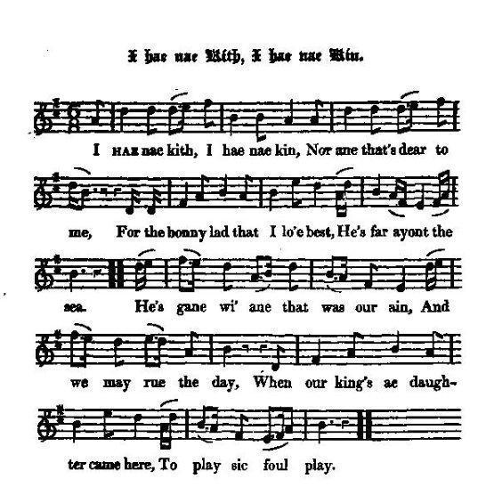

I hae nae Kith, I hae nae Kin
Je n'ai ni parents ni amis
Tune - Mélodie"I hae nae Kith, I hae nae Kin"
from Hogg's "Jacobite Reliques" , volume I, N° 33 (1819)
Sequenced by Christian Souchon


|
I HAE NAE KITH, I HAE NAE KIN
1. I hae nae kith, I hae nae kin, Nor ane that's dear to me, For the bonny lad that I lo'e best, He's far ayont the sea. He's gane wi' ane that was our ain, And we may rue the day, When our king's ae daughter came here , To play sic foul play. 2. O gin I were a bonny bird, Wi' wings that I might flee, Then I wad travel o'er the main, My ae true love to see ; Then I wad tell a joyfu' tale To ane that's dear to me, And sit upon a king's window, And sing my melody. 3. The adder lies i' the corbie's nest, Aneath the corbie's wame, And the blast that reaves the corbie's brood Shall blaw our good king hame. Then blaw ye east, or blaw ye west, Or blaw ye o'er the faem, 0 bring the lad that I lo'e best, And ane I darena name ! Source: Jacobite Minstrelsy, published in Glasgow by R. Griffin & Cie and Robert Malcolm, printer in 1828. |
JE N'AI PAS DE PARENTS PAS D'AMIS
1. Je n'ai pas de parents, pas d'amis, Non je n'ai plus personne Car celui qu'entre tous je chéris Un océan m'en éloigne. Il a suivi l'Autre être cher Et c'est la mort dans l'âme Qu'on vit au roi sa propre chair Jouer un tour infâme. 2. Hélas, que ne suis-je un bel oiseau, Et que n'ai-je des ailes! Je franchirais la mer aussitôt. J'irais voir celui que j'aime. Je ferais un récit joyeux Au plus noble des êtres, Chantant mon chant mélodieux Perché sur sa fenêtre. 3. La vipère est au nid du corbeau, Le corbeau ne l'écarte. Le vent chassera le vilain oiseau Nous rendant le vrai monarque. Vent du nord ou vent du midi, Tourbillonnant cyclone, Qu'il me rende mon doux ami Et l'Autre qu'on ne nomme! (Trad. Christian Souchon(c)2009) |
|
"The verses here are, in respect both of sentiment and expression, in the most pleasing style of Scottish lyrical composition. The political allusions evidently refer to the time of Queen Anne. When the tory faction gained the ascendancy in her reign, the hopes of those who favoured the Stuart, were greatly excited; and it is not unlikely that the lines,
" The adder i' the Corbie's nest, Aneath the corbie's wame," may be allegorical of some plot or intrigue which was then going on to farther the pretender's views." (Note by Hogg in his "Jacobite Relics", vol.1, page 219). |
"Les couplets ci-dessus sont, tant par le fond que par la forme, de la poésie lyrique écossaise d'excellente facture. Les allusions politiques ont trait, à n'en pas douter, à l'époque de la reine Anne. Quand les Tories eurent pris l'ascendant sur elle, ceux qui souhaitaient le retour des Stuart se prirent de nouveau à espérer. Il est probable que les vers:
"La vipère est au nid du corbeau, Le corbeau ne l'écarte. soient une allusion imagée à quelque complot ou intrigue ourdis alors pour favoriser les plans du Vieux Prétendant." (Note de Hogg dans les "Reliques Jacobites", volume I, page 219). |
|
|
|